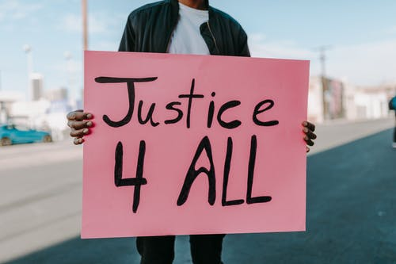

ORIENTATION 🧭
J'aimerais me diriger dans le secteur du droit car je trouve qu'il y a trop d'injustice dans le monde et donc suivre des études de droit spécialisé pour les avocats car mon rêve serait d'un jour ouvrir mon propre cabinet d'avocat et être mon propre patron.
PRESENTATION DE MON PARCOURS FUTUR:
- métiers/thèmes envisagés
- études post-bac
- spécialitées filière générale
Métiers envisagés:
Les métiers du secteur du droit m'intéressent tous mais j'ai une préférence pour le métier d’avocat. Il existe plusieurs sorte d'avocat et je souhaite me diriger vers le métier d'avocat s'occupant du droit des personnes notament le droit de la famille mais le métier d'avocat spécialisé dans le droit criminel c'est-à-dire défrendre des crimes me plait aussi. Je ne sais pas encore exactement mais ces deux branches m'intéressent.
👩🎓 Etudes envisagées après le bac:
Il faut 4 ans pour préparer un M1 (au minimum) en droit, puis 1 an pour préparer l'examen d'entrée en EDA (École d'avocats). La formation en EDA dure 18 mois à l'issue desquels il faut passer un examen d'aptitude obtenir le Capa (certificat d'aptitude à la profession d'avocat).
Mes choix de spécialitées en première générale:
Pour poursuivre mes études dans le droit j'aimerais chosir:
- SES (Sciences économiques et sociales)
- HGGSP (Histoire-Géographie, Géopolitique et Sciences politique)
- LLCE AMC (Anglais Monde Contemporain)